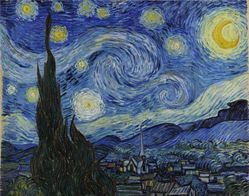
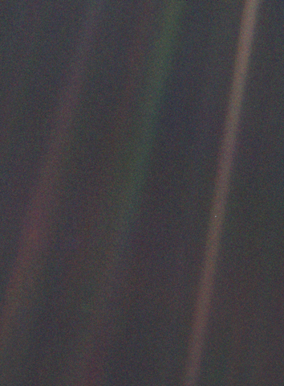

Необъятный космос  Винсент ван Гог "Звездная ночь" Космос - такой недосягаемый и загадочный - был всегда для человечества страшной тайной, за попытку разгадки которой карали смертью. Люди не были готовы к научному откровению. Но постепенно - шаг за шагом, с каждой теорией, высказанной вслух, с каждой жизнью, посвященной науке и поиску истины, отдельные личности толкали целое человечество к новому этапу развития. И открытие космоса стало для нас той самой ступенью эволюции, завершающим штрихом, показавшим, что уже достаточно большая часть населения планеты готова брать на себя ответственность, не прикрываясь карой или наградой мифических существ. Юрий Гагарин, Нил Армстронг, сотни ученых и мыслителей первыми открыли для нас дверь в большой мир космоса, в котором мы можем быть по-настоящему не одни. Космос похож на человека. Внутри нас происходят разные процессы как на биологическом, так и на психологическом уровне. Бушуют гормональные бури, кипят эмоции. Порой кажется, что все хаотично. Но стоит посмотреть немного пристальнее, и становится понятно, что все в человеке взаимосвязано. Плохие мысли ведут к плохому здоровью, а хороший настрой, наоборот, способен излечить тяжелобольного. И также как и в Космосе, в человеке существует великое множество тайн и загадок. Можно сказать, что каждый человек – это отдельно взятый Космос – со своим внутренним устройством и правилами. Иной раз даже сам человек не может разобраться в себе: в своих чувствах и переживаниях, и тогда внутри человека наступает хаос: дурные мысли, плохое настроение, даже болезни. Но стоит человеку осознать свои чувства, осмыслить положение вещей, то его внутренний мир гармонизируется, на смену хаосу приходит порядок. Космос - это решимость принять правду о человечестве и нашей планете, это смелость сделать шаг навстречу новому и неизведанному. Это наше взросление. Уже планируют космические миссии негосударственные организации, летают не только профессиональные космонавты. Будущее стремительно ворвалось в нашу жизнь, неожиданно став настоящим. В космосе - следующие ступени нашей эволюции, в нем наше будущее, ответы, возможности решения многих экономических, экологических, социальных проблем.
На берегах космического океана  Pale Blue Dot Космос — это все, что есть, что когда-либо было и когда-нибудь будет. Одно созерцание Космоса потрясает: дрожь бежит по спине, перехватывает горло, и появляется чувство, слабое, как смутное воспоминание, будто падаешь с высоты. Мы сознаем, что прикасаемся к величайшей из тайн. Размеры и возраст Космоса лежат за пределами нормального человеческого понимания. Наш крошечный планетарный дом затерян где-то между вечностью и безмерностью пространства. Перед лицом Космоса большинство людских дел выглядят незначительными, даже пустячными. И все же человеческий род молод, любопытен, храбр и подает большие надежды. За последние несколько тысячелетий мы сделали множество удивительных и неожиданных открытий, касающихся устройства Космоса и нашего места в нем, открытий, осмыслять которые так увлекательно. Они напоминают нам, что человек рожден удивляться, что постижение есть радость, что знание — залог выживания. Я верю: наше будущее зависит от того, насколько хорошо мы будем знать этот Космос, где мы плывем, как пылинка в утреннем небе. Эти исследования требуют одновременно и скептицизма, и воображения. Воображение часто уносит нас в небывалые миры. Но без него мы вообще никуда не попадем. Скептицизм позволяет нам отличать фантазии от фактов, проверять наши предположения. Космос богат без меры: изящные факты, изысканные взаимосвязи, тончайшая организация, внушающая благоговейный трепет. Поверхность Земли — это берег космического океана. Почти все наши знания мы получили, не покидая его. Совсем недавно мы вступили в море, зашли по щиколотку, самое большее — по колено. Вода манит. Океан зовет нас. Какая-то часть нашего существа знает, что мы пришли оттуда. Нас тянет вернуться. Эта тяга, я думаю, не таит в себе ничего кощунственного, хотя и способна потревожить всех богов, какие только могут существовать. Космос настолько велик, что для его описания нет смысла прибегать к таким удобным на Земле единицам измерения расстояния, как метры и километры. Вместо этого мы измеряем расстояние скоростью света. За одну секунду луч света проходит 300 000 километров, что равняется примерно семи оборотам вокруг Земли. Приблизительно за восемь минут он преодолевает путь от Солнца до Земли. Мы можем сказать, что Солнце находится в восьми световых минутах от нас. За год свет покрывает почти десять триллионов километров мирового пространства. Единица длины, равная пути, который свет проходит за год, называется световым годом. Ею измеряют не время, но расстояния — гигантские расстояния. Земля — особое место. Безусловно — не единственное в своем роде. Но, конечно, и не типичное. Никакая планета, звезда или галактика не может быть типичной, потому что Космос в основном пуст. Единственное, что типично для него, — безмерный, ледяной, вселенский вакуум, вечная ночь межгалактического пространства, место, настолько странное и пустынное, что в сравнении с ним планеты, звезды и галактики кажутся восхитительными исключениями. Если бы нас вдруг случайным образом выбросило где-то в Космосе, то шансы оказаться на поверхности планеты или вблизи нее не превысили бы одного к миллиарду триллионов триллионов (единица с 33 нулями). В повседневной жизни такие числа называют астрономическими. Планеты поистине бесценны. Заняв наблюдательный пост в межгалактическом пространстве, мы увидели бы россыпь бесчисленных слабых волокон света, напоминающих морскую пену на волнах Космоса. Это галактики. Некоторые из них одинокие странники, но большинство обретается в составе общин — звездных скоплений и, сбившись в кучу, бесконечно дрейфует среди величественной темноты Космоса. Планеты поистине бесценны. Заняв наблюдательный пост в межгалактическом пространстве, мы увидели бы россыпь бесчисленных слабых волокон света, напоминающих морскую пену на волнах Космоса. Это галактики. Некоторые из них одинокие странники, но большинство обретается в составе общин — звездных скоплений и, сбившись в кучу, бесконечно дрейфует среди величественной темноты Космоса. Перед нами Космос в самом крупном из известных масштабов. Мы в царстве туманностей, в восьми миллиардах световых лет от Земли, на полпути к границам знакомой нам Вселенной. Любая галактика состоит из газа, пыли и звезд — миллиардов и миллиардов звезд. И каждая звезда может быть чьим-то солнцем. Внутри галактики есть звезды, и миры, и, возможно, жизнь, разумные существа, космические цивилизации. Но издали галактики напоминают мне коллекцию любовно подобранных вещиц — ракушек, а может быть, кораллов, творений, над которыми Природа трудилась в космическом океане целые эоны. Существует несколько сотен миллиардов галактик, каждая из которых состоит в среднем из ста миллиардов звезд. Во всех галактиках вместе взятых планет, по-видимому, примерно столько же, сколько звезд: десять миллиардов триллионов. Перед лицом таких ошеломляющих чисел какова, вы думаете, вероятность, что лишь одна, самая обыкновенная звезда, наше Солнце, имеет обитаемую планету? Почему это счастье выпало только нам, затерянным в глухом углу Космоса? Мне кажется гораздо более вероятным, что Космос до краев наполнен жизнью. Просто мы, люди, еще не знаем этого. Мы только начинаем свои исследования. С расстояния восемь миллиардов световых лет нам трудно обнаружить даже то скопление, в котором находится наша Галактика, Млечный Путь, не говоря уж о Солнце и Земле. Та единственная планета, в населенности которой мы можем быть уверены, — это Космос настолько велик, что для его описания нет смысла прибегать к таким удобным на Земле единицам измерения расстояния, как метры и километры. Вместо этого мы измеряем расстояние скоростью света. За одну секунду луч света проходит 300 000 километров, что равняется примерно семи оборотам вокруг Земли. Приблизительно за восемь минут он преодолевает путь от Солнца до Земли. Мы можем сказать, что Солнце находится в восьми световых минутах от нас. За год свет покрывает почти десять триллионов километров мирового пространства. Единица длины, равная пути, который свет проходит за год, называется световым годом. Ею измеряют не время, но расстояния — гигантские расстояния. Но сейчас наше путешествие приводит нас к Местной Группе галактик, как называют это земные астрономы. Достигая в поперечнике нескольких миллионов световых лет, она включает в себя около двадцати галактик. Это довольно разбросанное, бедное и малозаметное скопление. Одна из его галактик, М31, видна с Земли в созвездии Андромеды. Подобно другим спиральным галактикам, она представляет собой огромный диск из звезд, газа и пыли. М31 имеет два маленьких спутника — две карликовые эллиптические галактики, связанные с ней гравитационным притяжением в силу того же физического закона, который стремится удержать меня в кресле. Во всем Космосе действуют одни и те же законы природы. А мы с вами находимся сейчас в двух миллионах световых лет от дома. Неподалеку от М31 расположена другая, очень похожая на нее галактика, наша собственная, спиральные рукава которой медленно вращаются, совершая один оборот за четверть миллиарда лет. Находясь в сорока тысячах световых лет от дома, мы обнаруживаем, что ввергнуты в падение к массивному ядру Млечного Пути. Но если мы хотим отыскать Землю, нам следует изменить курс и отправиться на окраину Галактики, к малозаметному месту вблизи края отдаленного спирального рукава. Даже между спиральными рукавами нас сопровождает захватывающее зрелище — это проносящиеся мимо нас звезды, нескончаемый сияющий поток разнообразнейших звезд. © Карл Саган "Космос. Эволюция Вселенной, жизни и цивилизации"